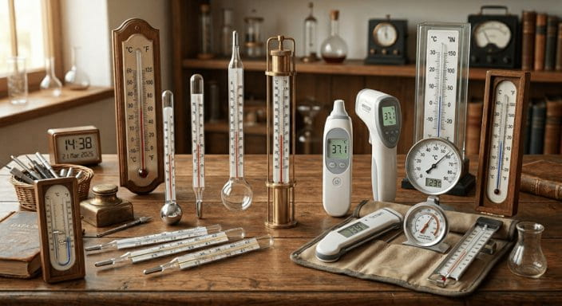
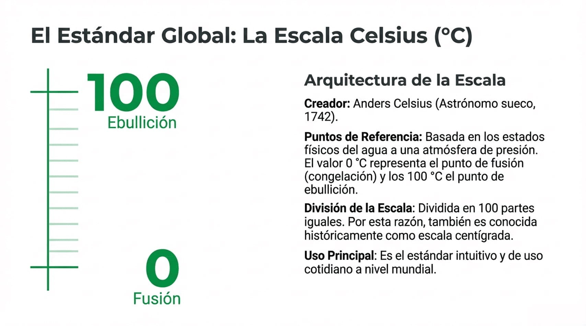
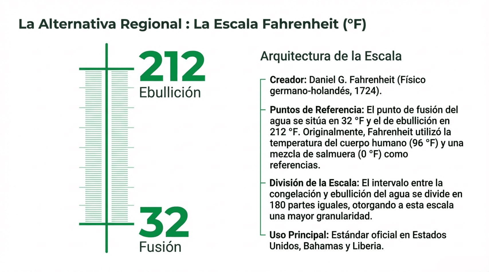
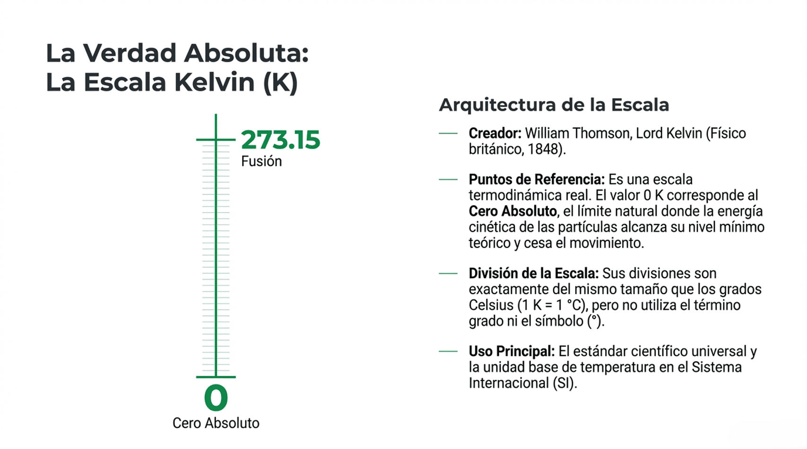
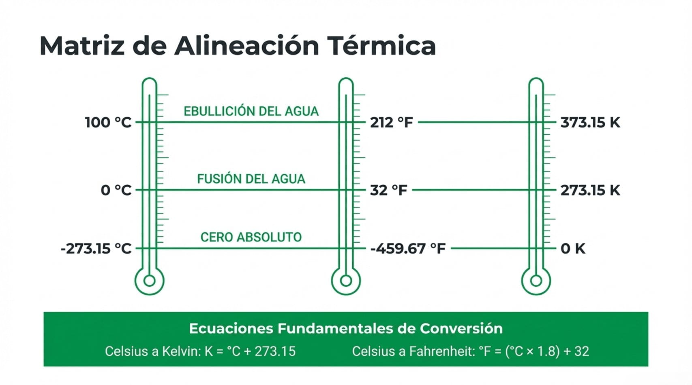

La temperatura es una magnitud física que expresa el grado o nivel de calor o frío de los cuerpos o del ambiente. Con la temperatura pasa lo contrario que con la masa: es una medida que alberga algo más de complejidad, ya que está ligado al concepto de la agitación de las partículas de los cuerpos: a mayor velocidad de estas partículas más temperatura tiene.
Cuando dos cuerpos que se encuentran a distinta temperatura se ponen en contacto, se produce una transferencia de energía, en forma de calor, desde el cuerpo caliente al frío. Esto ocurre hasta que las temperaturas de ambos cuerpos se igualan.
Esta es precisamente la idea en la que se basa el termómetro, el instrumento más usado para medir la temperatura.
En el siguiente vídeo, se explican de una forma muy sencilla estas ideas.
Instrumentos para medir la temperatura.
El instrumento utilizado habitualmente para medir la temperatura es el termómetro. Los termómetros de líquido encerrado en vidrio son los más populares; se basan en la propiedad que tiene el mercurio, y otras sustancias (alcohol coloreado, etc.), de dilatarse cuando aumenta la temperatura. El líquido se aloja en una burbuja -bulbo- conectada a un capilar (tubo muy fino). Cuando la temperatura aumenta, el líquido se expande por el capilar, así, pequeñas variaciones de su volumen resultan claramente visibles.

Unidades de temperatura.
Escala centígrada o Celsius

Escala Fahrenheit

Escala absoluta o de Kelvin

Comparativa entre escalas

Piensa.
¿Pueden existir temperaturas con valores negativos en las distintas escalas?
En la escala Celsius y en la Fahrenheit sí, sin embargo, en la Kelvin es imposible ya que parte del valor del cero absoluto.
Cómo pasar de una escala a otra.
En la siguiente lista de reproducción, que consta de dos vídeos, se explica cómo pasar de unas escalas de temperatura a otras. Además, incluyen algunos ejemplos:
Completa.
Curiosidad
Termómetro sin contacto
Últimamente se vienen utilizando unos termómetros que no necesitan contacto, y que se conocen popularmente por termómetro de infrarrojos. Pero, no te confundas, el láser es simplemente para apuntar mejor hacia el lugar de medición (como en ciertas miras de rifles), no para hacer la medida.